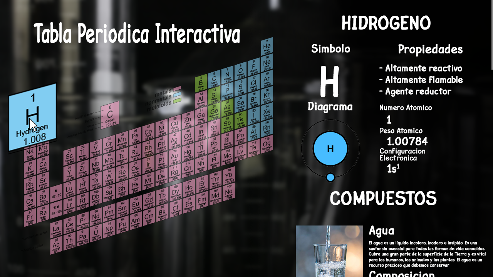

EDUCASITE
Plataforma Educativa
Somos una Plataforma Educativa con multitud de interesantes temas relacionados a la tecnología y la educación.
Nuestros temas favoritos:

- Características -
1. Muestra la tabla periodica con nombres, simbolo e otra informacion
2. Al hacer click en un elemento muestra informacion de este, usos y compuestos
Solo version de prueba disponible. 5 elementos disponibles.
Uso de redes sociales en el mundo
Las redes sociales son plataformas digitales que conectan a personas a través de la creación de perfiles, la conexión con otros, el intercambio de contenido y la interacción con este. Permiten mantenerse en contacto, conocer gente nueva, compartir intereses, promocionar negocios y encontrar información. Su impacto en la sociedad es significativo, y se ha vuelto una necesidad en la vida diaria de muchas personas, por eso vamos las estadísticas de uso de estas.
Redes sociales mas usadas
| Nombre | Cuota | Usuarios |
|---|---|---|
| 66.23% | 5,820,591,841 | |
| 9.74% | 855,995,237 | |
| 8.19% | 719,774,229 | |
| 7.28% | 639,799,315 | |
| 0.76% | 66,792,236 | |
| Otros | 7.80% | 685,499,266 |
Como podemos ver en estos datos, Facebook tiene una dominancia global en cuanto a redes sociales, además de eso que aquella en segundo lugar, Instagram, pertenece también a Facebook. Esto nos presenta con como una sola empresa tiene un monopolio en cuanto a la dominancia de la red.
La siguientes plataformas existen independientemente pero funcionan de manera diferente a las otras, algo que se puede observar es que ninguna de estas plataformas cumple el trabajo de la otra. Facebook es para compartir con amigos, Instagram para observar imágenes de gente alrededor del mundo, Pinterest es para compartir imágenes relacionadas al arte y diseño, Twitter es para compartir tus pensamientos al mundo, y Reddit sirve como un foro con una comunidad masiva en línea.
Países que hacen mayor uso de las redes sociales
| Nombre | Porcentaje de Población |
|---|---|
| Emiratos Árabes Unidos | 105.50% |
| Corea del Sur | 92.00% |
| Hong Kong | 89.20% |
| Países Bajos | 88.10% |
| Canadá | 85.70% |
Los datos presentados nos muestran como las redes sociales han tomado el mundo, países como Emiratos Árabes Unidos que tienen más usuarios de redes sociales que población local, y los otros países que se encuentran cerca del 90%, lo cual es casi toda la población de aquellos países. Esto nos muestra la imagen de cuanto ha tomado las redes sociales nuestra vida.
Crecimiento de Redes Sociales
Facebook 2023
| Periodo | Tasa |
|---|---|
| Q1 | 0.17 |
| Q2 | 0.88 |
| Q3 | 1.37 |
| Q4 | 1.16 |
A pesar de dominar por casi dos decadas, Facebook sigue creciendo aunque no al mismo ritmo pero no se detiene.
Algunos datos curiosos sobre las redes sociales
- El poder del #hashtag: El primer hashtag utilizado en Twitter fue #barcamp en 2007.
- Instagram y su amor por la comida: La comida es el tema más fotografiado en Instagram. ¡La pizza lidera las fotos más populares!
- Facebook y los nuevos amigos: En promedio, un usuario de Facebook tiene 338 amigos.
- Velocidad de YouTube: Cada minuto se suben más de 500 horas de video a YouTube.
- El fenómeno de Tiktok: Tiktok alcanzó los mil millones de usuarios activos en un tiempo récord, más rápido que cualquier otra red social.
- Dominio femenino en Pinterest: Aproximadamente el 80% de los usuarios de Pinterest son mujeres.
- "Me gusta" masivo: El botón de "Me Gusta" en Facebook originalmente iba a llamarse "Awesome" (Increíble).
¿Quienes Somos?
EDUCASITE: Educación gratuita para todos
En las aulas de la UEMDCG, donde el conocimiento se fusiona con el espíritu emprendedor, nace EDUCASITE: una plataforma educativa gratuita que busca revolucionar el acceso al aprendizaje.
Inspirados por la convicción de que la educación es un derecho universal, un grupo de estudiantes ha dedicado horas sin fin a crear una plataforma intuitiva, atractiva y accesible para todos.
- EDUCASITE ofrecerá una amplia gama de cursos, desde materias básicas de secundaria hasta tecnología punta.
- Utilizará recursos multimedia interactivos y una interfaz amigable para facilitar el aprendizaje.
- Su objetivo es derribar las barreras económicas y democratizar el conocimiento.
- Imaginan a estudiantes de todo el mundo aprendiendo a su propio ritmo, sin importar su ubicación o condición socioeconómica.
Con pasión y determinación, estos estudiantes de la UEMDCG están dando sus primeros pasos para cambiar el mundo, un byte a la vez, y convertir EDUCASITE en la llave que abra las puertas del conocimiento a miles de jóvenes.
Nuestro Equipo
EDAD: 16
COLEGIO: Unidad Educativa del Milenio Dr. Camilo Gallegos Dominguez
AÑO DE ESTUDIO: 3ro Informática "B"
LEMA PERSONAL: Mente curiosa, corazón compasivo, espíritu resolutivo: explorando el mundo con pasión y propósito.
Stiven Barreiro
Aspiro a alcanzar el éxito en mis términos, creando un camino propio que me lleve a una vida plena y satisfactoria. Visualizo un futuro donde mi hogar sea un refugio de paz y prosperidad, un espacio donde florezcan la creatividad, la innovación y el bienestar.
Fortalezas:
- Siempre exploro y aprendo con pasión.
- Me conozco bien y tomo decisiones acertadas.
- Soy amable y creo entornos armoniosos.
Debilidades:
- Me cuesta mantener la concentración a veces.
- Lucho contra la procrastinación, pero estoy mejorando.
Habilidades:
- Aprendo rápido y aplico mis conocimientos.
- Encuentro soluciones creativas a los problemas.